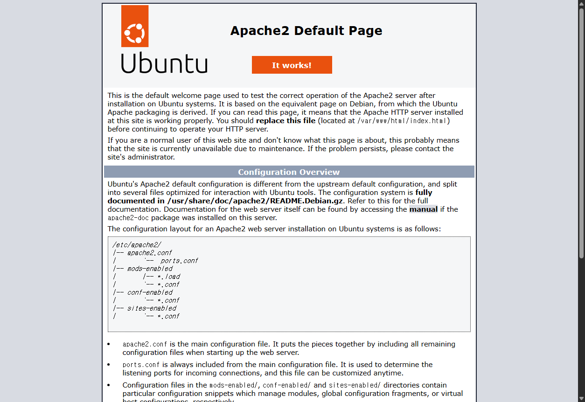
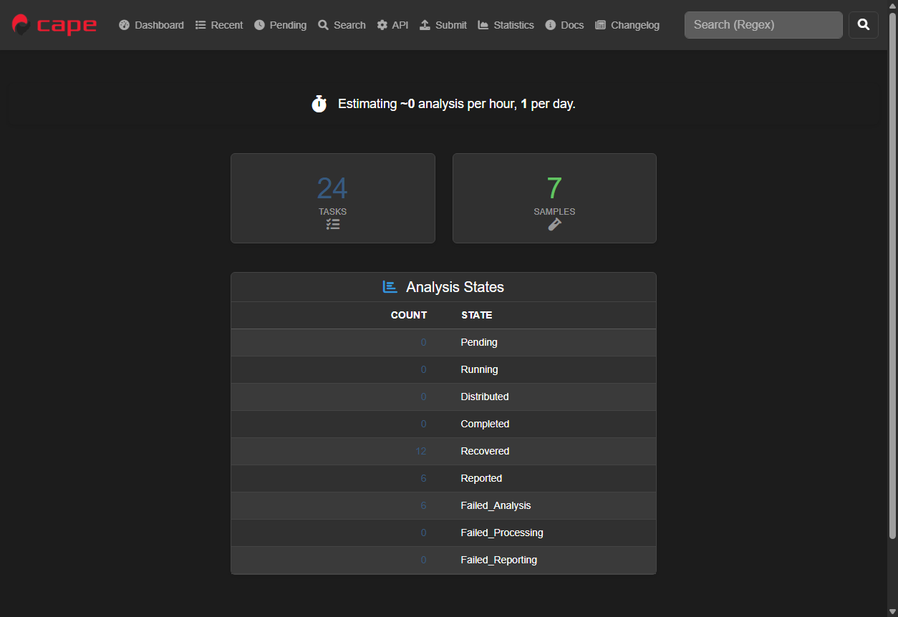

대상 IP: 192.168.227.128
총 결과 수: 7
위험: 0
주의: 3
일반: 3
알 수 없음: 1
| 포트 | 상태 | 서비스 | 제품 | 버전 | 위험도 | 이유 |
|---|---|---|---|---|---|---|
| 22 | open | ssh | OpenSSH | 8.9p1 Ubuntu 3ubuntu0.14 | 일반 | 일반적인 원격 관리 서비스입니다. |
| 80 | open | http | Apache httpd | 2.4.52 | 일반 | 일반적인 웹 서비스입니다. |
| 111 | open | rpcbind | 2-4 | 주의 | RPC 서비스는 외부 노출 시 내부 서비스 정보 노출 가능성이 있어 주의가 필요합니다. | |
| 139 | open | netbios-ssn | 주의 | NetBIOS 서비스는 외부 노출 시 주의가 필요합니다. | ||
| 445 | open | microsoft-ds | 주의 | SMB 서비스는 외부 노출 시 공격 표면이 커질 수 있습니다. | ||
| 2042 | open | tcpwrapped | 알 수 없음 | 서비스가 접근 제어나 래핑으로 보호되어 있어 정확한 식별이 어렵습니다. | ||
| 8000 | open | http-alt | Werkzeug/3.1.5 Python/3.10.12 | 일반 | 기본 포트 외에서 동작하는 웹 서비스입니다. |
포트: 80
서비스: http
캡처 파일: output/capture_192_168_227_128_80.png

포트: 8000
서비스: http-alt
캡처 파일: output/capture_192_168_227_128_8000.png
